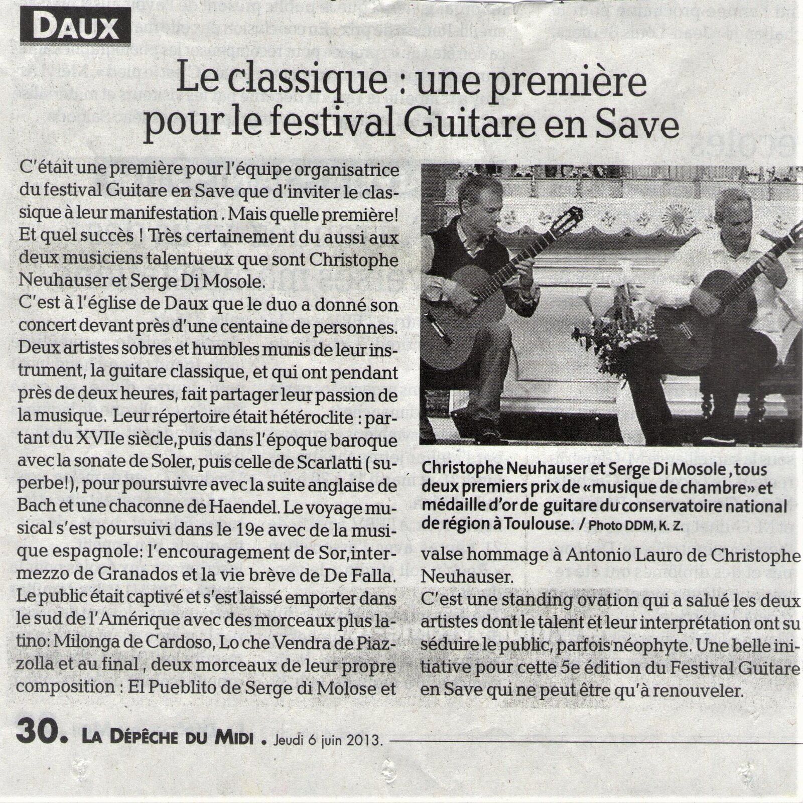
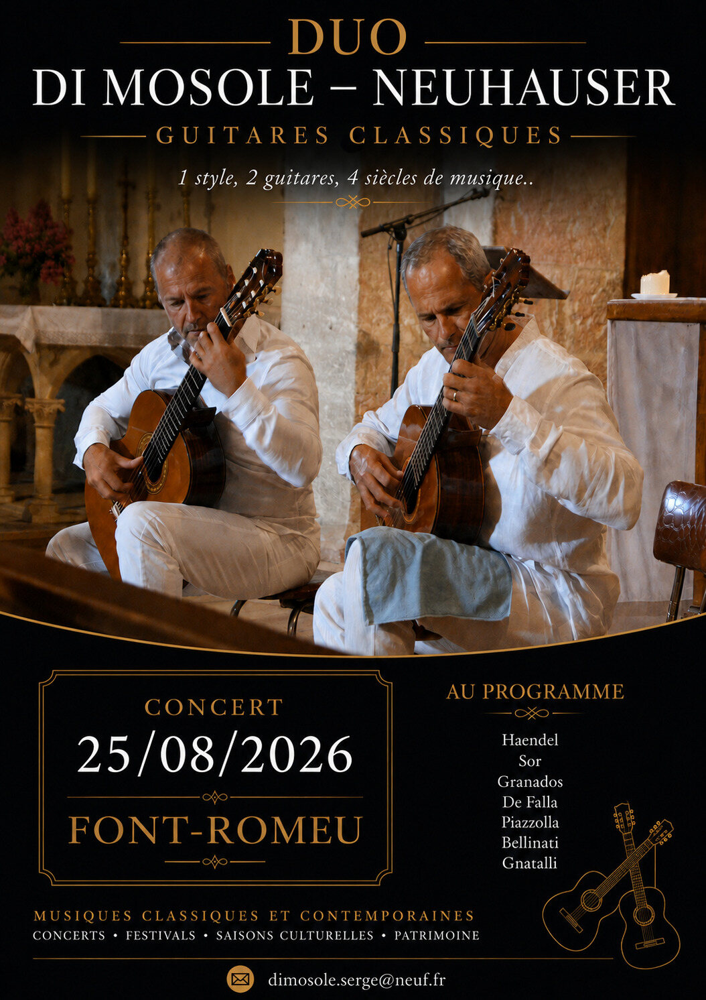
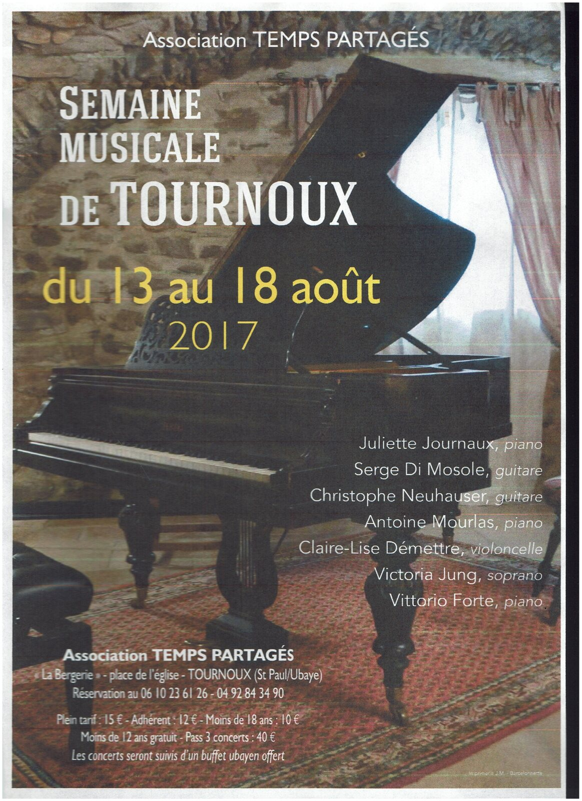
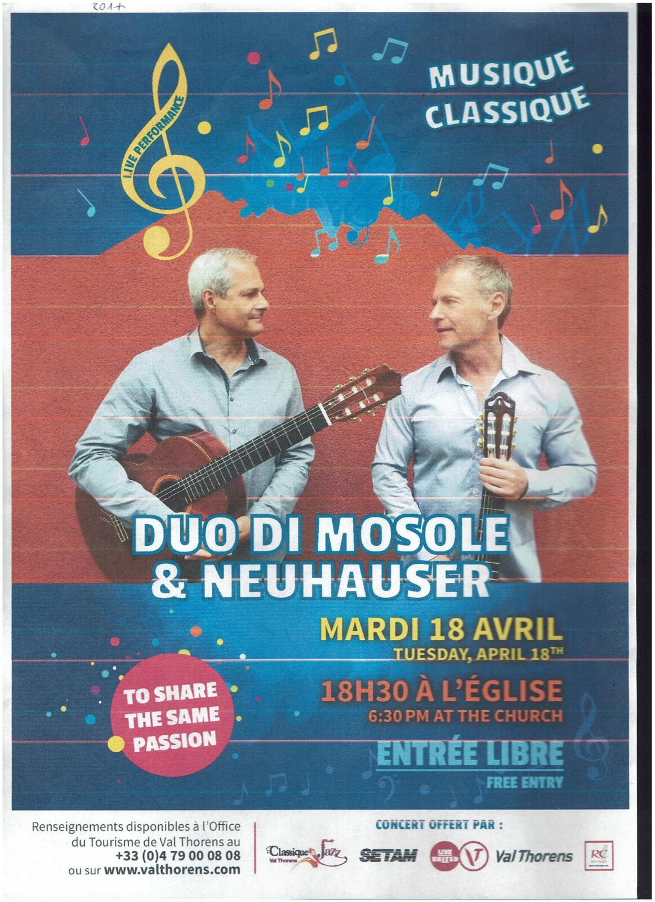
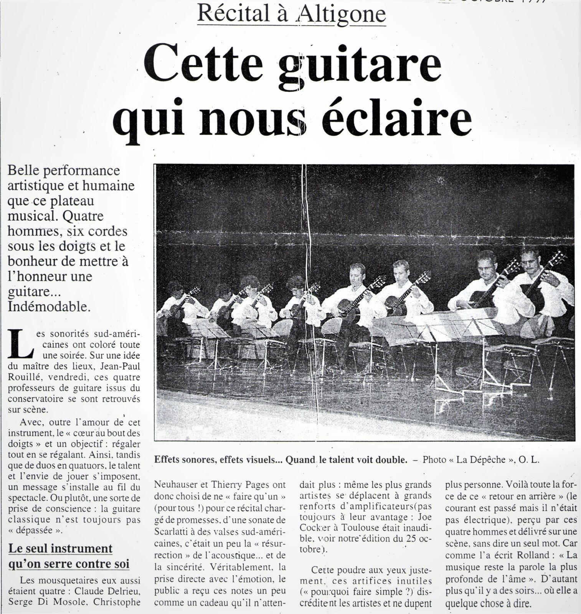

Festival Guitare en Save — Daux
Une référence particulièrement forte du parcours du Duo : accueil du répertoire classique au festival et réception enthousiaste du public.
Quelques lieux, festivals et souvenirs de concerts ayant jalonné le parcours du Duo Di Mosole–Neuhauser.
Le dernier concert du Duo à Font-Romeu rejoint désormais les archives de scène.

Un récital pour deux guitares dans le cadre patrimonial de la Chapelle de l’Ermitage, autour du répertoire classique, espagnol et sud-américain.
Cette étape récente prolonge une présence déjà ancienne du Duo à Font-Romeu.
Concert du 25 août 2026Une sélection volontairement resserrée d’articles et d’affiches représentatifs du parcours du Duo.

Une référence particulièrement forte du parcours du Duo : accueil du répertoire classique au festival et réception enthousiaste du public.

Le Duo au sein d’une programmation réunissant plusieurs interprètes et formations.

Un récital de guitare classique dans les Alpes, illustrant la diversité géographique des engagements du Duo.

Une archive de presse ancienne qui témoigne de la continuité du parcours scénique et musical.
Sélection de festivals, auditoriums, églises, lieux patrimoniaux et événements ayant accueilli le Duo.
Programmateurs, festivals, associations et lieux culturels peuvent nous contacter pour connaître nos disponibilités et construire un programme adapté au lieu.
Nous contacter